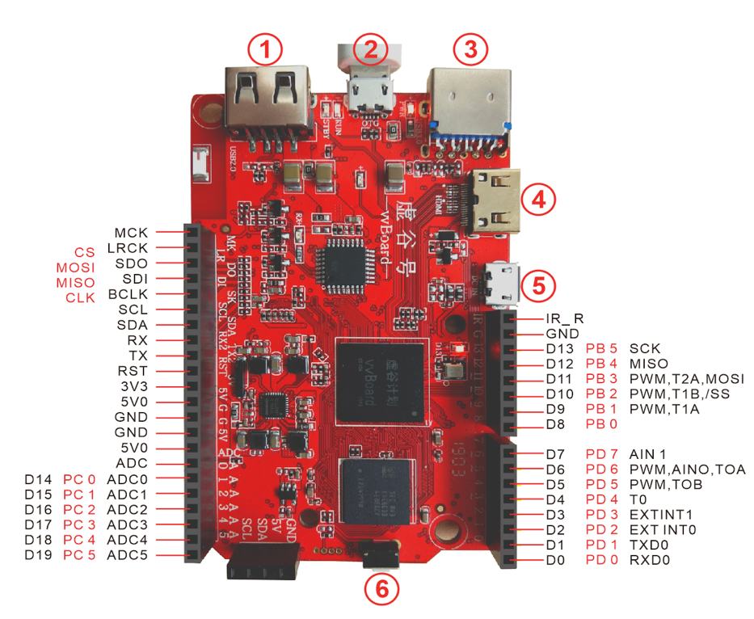

3. 虚谷号硬件资源详解¶
虚谷号除了引出全部的Arduino引脚外，还引出了主芯片的部分引脚。
3.1. 外部硬件接口¶
图中标注1、2、3、4、5、6的接口解释如下：
1是USB2.0接口；
2是OTG口，连接电脑的接口；
3是USB3.0接口；
4是HDMI输出接口；
5是DC in接口，是电源输入接口；
- 6是RESET按键，其功能如下：
未上电时按住reset按键，机器将进入Loader烧写模式。
上电系统启动后，短按reset按键为刷新vvBoard功能。
上电系统启动后，长按reset按键5秒后松开为重启系统功能（初始化U盘文件系统）。
3.2. 开源硬件接口¶
I2C: 一组I2C，3.3V电平信号，5V供电;
ISPI(I2S):1. 一组SPI接口(兼容I2S)，3.3V电平; 2. SPI(I2S)支持主从模式;
IUART2:一组UART，兼作虚谷号内核调试，系统信息打印等;
IIR_R:一个红外遥控输入接口，输入电平3.3V，提供红外(遥控) 控制接口；
ARDUINO接口:全兼容arduino UNO的接口。
3.3. 扩展引脚说明¶
CVBS_OUT, 复合视频信号输出：输出视频信号到TV，LCD等，可用于将虚谷号扩展成视频盒子等；
ADC，虚谷号的ADC PIN：可以扩展更多的功能按键，也可用于ADC采样；
TX/RX，虚谷号的debug串口：虚谷号使用者的开发接口，系统信息的打印接口；
- IR_R：
1， 红外（遥控）信息的输入接口；
2，虚谷号GPIO口，扩展单线通信接口或虚谷号模拟PWM输出控制；
- SPDIF：
1，数字音频接口，用于驱动数字声卡（支持Dolby音效或DTS环绕音效）；
2，虚谷号GPIO口，扩展单线通信或虚谷号模拟PWM输出控制；
AOL/AOR：虚谷号audio codec的音频模拟信号输出（左右声道），可用于将虚谷号扩展成视频盒子的音频输出或用于将虚谷号扩展为智能音箱等。
3.4. 系统资源名称¶
虚谷号与Arduino连接的串口名称：ttys1